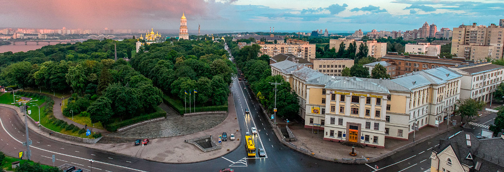

Освіта

- Навчаюсь в Національному Транспортному Університеті
- Факультет транспортних та інформаційних технологій
- На 121 спеціальності "Інженерія програмного забезпечення"
- III курс
Hard Skills
- Знання мов програмування, такі як: C++, Python, Java
- Робота з Adobe Photoshop
- Scrum та MySQL
- Знання верстки (HTML, CSS, Javascript)
- Вміння працювати в Microsoft Word, Microsoft Excel, Microsoft PowerPoint
- Уміння складати тести для ПЗ, знання основних систем автоматизації тестування
Soft Skills
- Уважність
- Пунктуальність
- Креативність
- Уміння працювати в команді
- Комунікабельність
- Відповідальність
Крім того, що я навчаюсь в університеті, у мене є інші захоплення.
Мені дуже подобається малювати картини за номерами, якраз зараз
я домальовую наступну свою картину. Також я насолоджуюся тим,
коли я фотографую людей та природу.